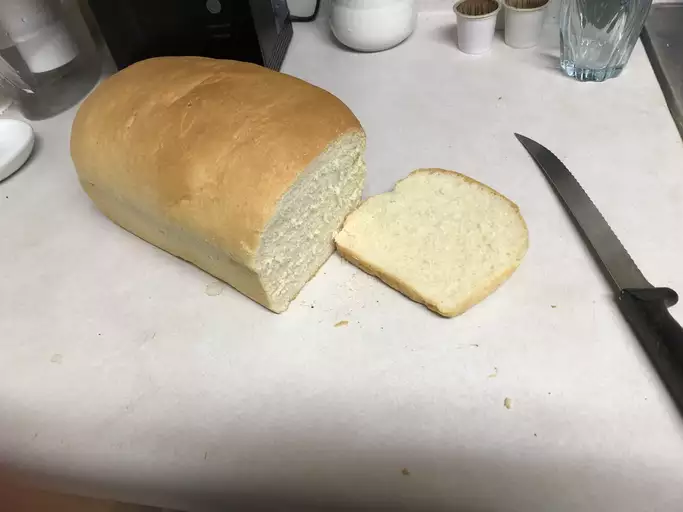

Bread Machine White Bread
— Best Bread Machine
Bread —

This bread machine recipe is easy and foolproof. It makes a very soft and tasty loaf of bread with a flaky crust.
· · · Method · · ·
1 cupwarm water (90-95 degrees F)2 tbspwhite sugar2¼ tsp(1 package - 0.25 ounce) bread machine yeast¼ cupvegetable oil3 cupsbread flour1 tspsalt
Place water, sugar, and yeast in the pan of the bread machine. Add oil, flour, and salt to the yeast. Select Basic or White Bread setting (1½ lbs), and press Start.
Remove loaf from the machine after the cycle is done; cool in the pan for 5 minutes before turning it out onto a rack to cool completely.